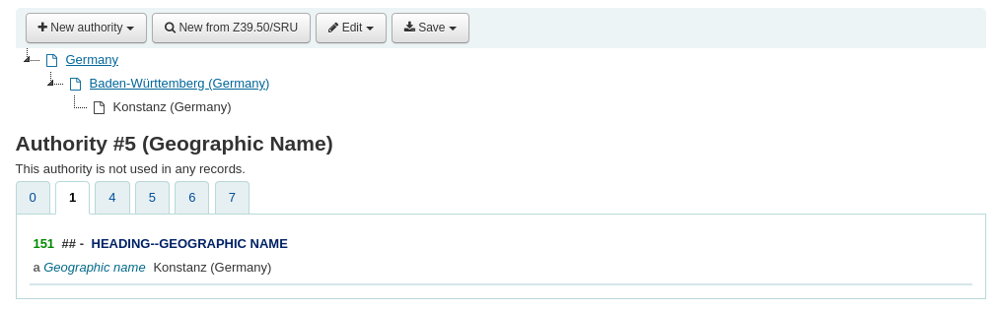

權威
Get there: More > Administration > Global system preferences > Authorities
一般
AuthDisplayHierarchy
詢問：檢視權威記錄時，____ 廣義詞/狹義詞層級。
Default: Don’t show
預設值：
Don’t show
Show
說明：
When set to ‘Show’ broader and narrower ‘See also’ references will be displayed in a tree at the top of the record in both the staff interface and the OPAC.

For MARC21, in order for this display to appear, the records must have 5XX with the relationship code in $w and the authority number (authid) in $9.
备注
The relationship codes in $w can be found on the Library of Congress website under Tracings and references-General information
g - Broader term
h - Narrower term
For example, the records in the above screenshot have the following information:
Authority #3 001 3 151 $a Germany 551 $w h $a Baden-Württemberg (Germany) $9 4 Authority #4 001 4 151 $a Baden-Württemberg (Germany) 551 $w g $a Germany $9 3 551 $w h $a Konstanz (Germany) $9 5 Authority #5 001 5 151 $a Konstanz (Germany) 551 $w g $a Baden-Württemberg (Germany) $9 4警告
The relationships must be bidirectional, meaning the broader term must reference the narrower term and the narrower term must reference the broader term.
AuthorityControlledIndicators
詢問：以下列的字元編輯權威紀錄控制書目欄位 (可能為分欄 $2) 的指標。將略過以井號開始 (#) 的內容。每列的格式應為：(marc21|unimarc)、tag、ind1:(auth1|auth2|some_value)、ind2:(auth1|auth2|thesaurus|some_value)。auth1 與 auth2 表示權威紀錄的兩個指標，tag是書目紀錄欄號或星號 (*)，some_value 是固定的值 (一個字元)。MARC21 選項的辭語典表示權威欄位 008/11 與 040$f 控制的指標。
說明：
合併權威時使用。
控制連結權威紀錄指標如何對書目指標影響。目前，MARC 21 的預設值微調值與 UNIMARC 權威指標的複本。
例如，書目紀錄 MARC 21 欄號 100 應從連結權威紀錄中，挑選其第一個指標。第二個指標不是由權威控制。此報表支援該等 MARC。
AuthorityMergeLimit
詢問：修改權威紀錄時，不要更新編號大於 ___ 的書目紀錄。(在此限制上，由 :ref:` merge_authority 工作排程<cron-update-authorities-label>` 更新它們。)
預設值：50
說明：
此系統偏好決定了權威記錄更改時可以更新的書目記錄的最大數量。
如果權威記錄連結到許多書目記錄有助於防止過度使用資源。
確保啟用 merge_authority cron job 以抓取不會以其他方式傳輸到書目記錄的更新。
AuthorityMergeMode
預設值：鬆散
詢問：從權威紀錄更新書目紀錄 (“合併”) 時，處理在 ___ 模式內相關書目紀錄的分欄。在嚴格模式下在權威紀錄找不到的分欄，會被刪除。鬆散模式則保留它們。鬆散模式是歷史行為仍為預設值。
預設值：
鬆散
嚴格
AutoCreateAuthorities
詢問：編輯記錄時，___ 遺失的權威記錄。
Default: don’t generate
預設值：
don’t generate
產生
說明：
This system preference allows you to decide if Koha automatically creates new authority records from the bibliographic records.
警告
RequireChoosingExistingAuthority must be set to “don’t require”, otherwise this system preference has no effect.
If this is set to “don’t generate”, and catalogers enter uncontrolled terms in controlled fields, Koha will not generate matching authority records.
If set to “generate” (and RequireChoosingExistingAuthority is set to “don’t require”), Koha will automatically create authority records for headings that don’t have any authority link when saving a bibliographic record.
GenerateAuthorityField667
Asks: Use the following text as default value for the 667$a field of MARC21 authority records: ___
Default: Machine generated authority record
說明：
This system preference is used when Koha automatically creates authority records when RequireChoosingExistingAuthority is set to “don’t require” and AutoCreateAuthorities is set to “generate”.
Enter the text you want to use in the 667$a field.
备注
This system preference is only used when marcflavour is set to MARC21.
GenerateAuthorityField670
Asks: Use the following text as default value for the 670$a field of MARC21 authority records: ___
Default: Work cat.
說明：
This system preference is used when Koha automatically creates authority records when RequireChoosingExistingAuthority is set to “don’t require” and AutoCreateAuthorities is set to “generate”.
Enter the text you want to use in the 670$a field.
备注
This system preference is only used when marcflavour is set to MARC21.
MARCAuthorityControlField008
預設值：|| aca||aabn | a|a d
詢問：在 MARC21 權威控制欄位 008 位置 06-39 (定長欄資料) 使用以下列文字。
重要
此偏好不包括日期 (位置 00-05)，Koha 將自動計算並將其放在此偏好的值之前。
說明：
此偏好控制權威記錄008欄位的預設值。不影響書目記錄。
RequireChoosingExistingAuthority
Asks: When editing records, ___ catalogers to reference existing authorities.
Default: don’t require
預設值：
don’t require
require
說明：
This system preference determines whether or not catalogers can type into authority controlled fields.
If set to “don’t require”, catalogers can manually enter uncontrolled terms into controlled fields
If set to “require”, authority controlled fields will be locked, forcing catalogers to search for an authority.
If set to “require”, it will block AutoCreateAuthorities. Authorities will have to be catalogued manually (or imported).
UNIMARCAuthorityField100
預設值：afrey50 ba0
Asks: Use the following text for the contents of UNIMARC authority field 100 position 08-35 (fixed length data elements).
重要
在此偏好內不含日期 (位址 00-07)，Koha 自動計算並置於此偏好之前。
說明：
此偏好控制 UNIMARC 權威記錄欄號 100 的預設值。它不影響書目記錄。
UseAuthoritiesForTracings
預設值：不使用
詢問：___ 權威記錄號做為主題搜尋的字串。
預設值：
不使用
以主題/著者的關鍵字做為搜尋的連結(如：opac-search.pl?q=su:Business%20networks)
使用
以權威記錄做為搜尋的連結(如：opac-search.pl?q=an:354)
說明：
已使用權威檔案的圖書館，點選 OPAC 或館員介面的權威主題或著者時，連結至權威記錄，搜尋出完整的記錄。沒有完整權威檔案的圖書館，可以設定此偏好為 ‘不使用’，允許搜尋者點選連結至著者標目執行欄位的鍵詞搜尋，找出所有相關的結果。
連結器
這些偏好控制 Koha 書目記錄至權威記錄的連結。經過適當的設定後，新增至 Koha 的書目記錄都自動連結至權威記錄；設定之前已存在的書目記錄，系統管理者可執行腳本程式 (misc/link_bibs_to_authorities.pl) 將這些記錄連結入權威記錄。
AutoLinkBiblios
Asks: ___ attempt to automatically link headings when saving records in the cataloging module.
Default: Don’t
預設值：
做
Don’t
說明：
This system preference determines whether or not Koha will attempt to link terms in authority controlled field to existing authority records upon saving a new bibliographic record.
This system preference is used when creating new bibliographic records. CatalogModuleRelink and LinkerRelink are used when editing bibliographic records.
If set to “Do”, Koha will search in the thesaurus to find a matching authority record. If it finds one, it will link it. If it finds more than one, LinkerModule will determine which one is linked.
If set to “Don’t”, no linking attempt will be made when saving a new bibliographic record.
CatalogModuleRelink
詢問：___ 自動再連結曾經於編目模組儲存的記錄。
Default: Don’t
預設值：
做
Don’t
說明：
This system preference determines whether or not authority links are checked and adjusted when saving a bibliographic record.
When set to “Do”, Koha will automatically relink headings when a record is saved in the cataloging module when LinkerRelink is turned on, even if the headings were manually linked to a different authority by the cataloger.
备注
This system preference requires that AutoLinkBiblios be set to “Do”.
LinkerConsiderThesaurus
Asks: ___ compare the source for 6XX headings to the thesaurus source for authority records when linking.
Default: Don’t
預設值：
Don’t
做
說明：
This system preference is used to enable multiple thesauri support for authorities.
The thesaurus used for the term is added to the authority record using 040$f.
In the bibliographic record, set the second indicator to 7 for 650 and add the source to 650$2. For local terms, use 4 (Source not specified) as the indicator.
Example for a bibliographic record:
650 _ 0 $a Feminism 650 _ 7 $a Feminism $2 sao 650 _ 7 $a Feminism $2 barn
The first example above is the LCSH term. The other two terms are from sao (controlled Swedish subject heading system) and barn (Swedish children subject heading system). These three are using the same TOPIC_TERM Feminism, but they belong to different thesauri.
警告
In existing systems, enabling this preference may require a reindex, and may generate new authority records if AutoCreateAuthorities is enabled.
备注
Support for multiple authority thesauri currently only works with ElasticSearch.
LinkerKeepStale
預設值：不做
詢問：當連結器找到不對照連結時 ___ 保留原來的標題連結至權威記錄。
預設值：
做
不做
說明：
When set to ‘Do’, the linker will never remove a link to an authority record, though, depending on the value of LinkerRelink, it may change the link.
LinkerModule
預設：預設
詢問：使用 ___ 連結器模組供標題對照至權威記錄之用。
預設值：
預設
Retains Koha’s previous behavior of only creating links when there is an exact match to one and only one authority record; if the LinkerOptions preference is set to ‘broader_headings’, it will try to link headings to authority records for broader headings by removing subfields from the end of the heading
第一個對映
即使有多筆權威記錄對映成功，只會新增連結至與指定標題對映的第一個權威記錄
最後對映
即使有多筆權威記錄對映成功，只會新增連結至與指定標題對映的最後一個權威記錄
說明：
儲存書目記錄時，此偏好告訴Koha使用指定的對應權威記錄。
LinkerOptions
詢問： 權威連結器使用以下的選項 ___
重要
此功能還在實驗中，在進一步擴充前不應使用於作業環境裡。
說明：
以直線 (|) 區隔的選項，目前只有 “broader_headings” 一個選項。設定”broader_headings” 之後，連結器將依下例對映標題：
=600 10$aCamins-Esakov, Jared$xCoin collections$vCatalogs$vEarly works to 1800.
首先：Camins-Esakov, Jared–Coin collections–Catalogs–Early works to 1800
然後：Camins-Esakov, Jared–Coin collections–Catalogs
然後：Camins-Esakov, Jared–Coin collections
然後：Camins-Esakov, Jared (已對映！若之前的嘗試已對映，就不會嘗試這個)
LinkerRelink
預設值：做
詢問：___ 再連結曾經連結至權威記錄的標題。
預設值：
做
不做
說明：
設定為 ‘做’ 時，連結器先確認曾經連結至權威記錄的標題，修正錯誤的連結。若設定為 ‘不做’，忽視既有的連結，即使既有連結失效或不正確。